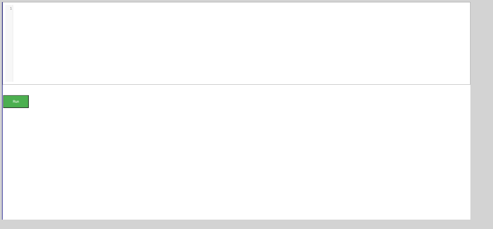
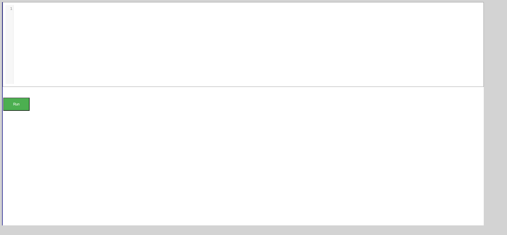

-
Array Page of DSAlgo portal
2:49:21 PM / 00:06:10:517 Fail
Array Page of DSAlgo portal
05.02.2025 2:49:21 PM 05.02.2025 2:55:31 PM 00:06:10:517 · #test-id=1FailVerify that user is able to navigate to "Practice Questions" Page from "Arrays in Python" pageGiven The user is on the Home page and clicks Sign InWhen The user gets data from excel sheet "Valid_Login" and 1 for the login pageThen The user is in the Home page after Sign InGiven The user is in the Arrays in Python pageWhen The user clicks Practice Questions buttonThen The user should be redirected to Practice pageHooks.Hooks.teardown(io.cucumber.java.Scenario)screenshot PassVerify that user is able to navigate to Array data structure pageGiven The user is on the Home page and clicks Sign InWhen The user gets data from excel sheet "Valid_Login" and 1 for the login pageThen The user is in the Home page after Sign InGiven The user is in the Home page after Sign inWhen The user select Array item from the drop down menuThen The user should be directed to ARRAY Data Structure PagePassVerify that user is able to navigate to "try Editor" page for "Arrays in Python" pageGiven The user is on the Home page and clicks Sign InWhen The user gets data from excel sheet "Valid_Login" and 1 for the login pageThen The user is in the Home page after Sign InGiven The user is in the Arrays in Python pageWhen The user clicks Try Here button in Arrays in Python pageThen The user should be redirected to a page having a try Editor with a Run button to testFailVerify that user receives error when click on Run button for "Arrays in Python" try Editor pageFailVerify that user receives error when click on Run button for "Arrays in Python" try Editor pageGiven The user is on the Home page and clicks Sign InWhen The user gets data from excel sheet "Valid_Login" and 1 for the login pageThen The user is in the Home page after Sign InGiven The user is in the Arrays in Python tryEditor pageWhen The user enters "TryCode" and 1 clicks the Run Button in tryEditor pageThen The user should able to see a error message from "TryCode" and 1Hooks.Hooks.teardown(io.cucumber.java.Scenario)screenshotPassVerify that user receives error when click on Run button for "Arrays in Python" try Editor pageGiven The user is on the Home page and clicks Sign InWhen The user gets data from excel sheet "Valid_Login" and 1 for the login pageThen The user is in the Home page after Sign InGiven The user is in the Arrays in Python tryEditor pageWhen The user enters "TryCode" and 2 clicks the Run Button in tryEditor pageThen The user should able to see a error message from "TryCode" and 2PassVerify that user receives error when click on Run button for "Arrays in Python" try Editor pageGiven The user is on the Home page and clicks Sign InWhen The user gets data from excel sheet "Valid_Login" and 1 for the login pageThen The user is in the Home page after Sign InGiven The user is in the Arrays in Python tryEditor pageWhen The user enters "TryCode" and 3 clicks the Run Button in tryEditor pageThen The user should able to see a error message from "TryCode" and 3PassVerify that user is able to navigate to "Arrays in Python" pageGiven The user is on the Home page and clicks Sign InWhen The user gets data from excel sheet "Valid_Login" and 1 for the login pageThen The user is in the Home page after Sign InGiven The user is in the Array page after Sign inWhen The user clicks Arrays in Python buttonThen The user should be redirected to Arrays in Python pagePassVerify that user is able to see output for valid python code for "Arrays in Python" try Editor pagePassVerify that user is able to see output for valid python code for "Arrays in Python" try Editor pageGiven The user is on the Home page and clicks Sign InWhen The user gets data from excel sheet "Valid_Login" and 1 for the login pageThen The user is in the Home page after Sign InGiven The user is in the Arrays in Python tryEditor pageWhen The user enters "TryCode" and 4 clicks the Run Button in tryEditor pageThen The user should able to see output in the console from "TryCode" and 4PassVerify that user is able to navigate to "Search the array" Page from Practice question page of "Arrays in Python" pageGiven The user is on the Home page and clicks Sign InWhen The user gets data from excel sheet "Valid_Login" and 1 for the login pageThen The user is in the Home page after Sign InGiven The user is on the Practice question page of Arrays in Python pageWhen The user clicks the Search the array linkThen The user should be redirected to Question page of Search the array linkPassVerify that user is able to navigate to Array data structure pageGiven The user is on the Home page and clicks Sign InWhen The user gets data from excel sheet "Valid_Login" and 1 for the login pageThen The user is in the Home page after Sign InGiven The user is in the Home page after Sign inWhen The user clicks the Get Started button in Array PanelThen The user should be directed to ARRAY Data Structure PagePassVerify that user receives NameError, SyntaxError for invalid python code on running "Search the array" questionPassVerify that user receives NameError, SyntaxError for invalid python code on running "Search the array" questionGiven The user is on the Home page and clicks Sign InWhen The user gets data from excel sheet "Valid_Login" and 1 for the login pageThen The user is in the Home page after Sign InGiven The user is on the practice question editor of Search the array questionWhen The user write the invalid code from "PracticeQns" and 1 in Editor and click the Run ButtonThen The user should able to see error message in alert window from "PracticeQns" and 1PassVerify that user receives NameError, SyntaxError for invalid python code on running "Search the array" questionGiven The user is on the Home page and clicks Sign InWhen The user gets data from excel sheet "Valid_Login" and 1 for the login pageThen The user is in the Home page after Sign InGiven The user is on the practice question editor of Search the array questionWhen The user write the invalid code from "PracticeQns" and 2 in Editor and click the Run ButtonThen The user should able to see error message in alert window from "PracticeQns" and 2PassVerify that user receives error on submitting invalid python code, incorrect answer for "Find Numbers with Even Number of Digits" questionGiven The user is on the Home page and clicks Sign InWhen The user gets data from excel sheet "Valid_Login" and 1 for the login pageThen The user is in the Home page after Sign InGiven The user is on the practice question editor of Find Numbers with Even Number of Digits questionWhen The user write the code from "PracticeQns" and 4 in Editor and Click the Submit ButtonThen The user should see a message from "PracticeQns" and 4PassVerify that user receives error when click on Run button without entering code for "Arrays Using List" try Editor pageGiven The user is on the Home page and clicks Sign InWhen The user gets data from excel sheet "Valid_Login" and 1 for the login pageThen The user is in the Home page after Sign InGiven The user is in the tryEditor page of Arrays Using ListWhen The user enters "TryCode" and 3 clicks the Run Button in tryEditor pageThen The user should able to see a error message from "TryCode" and 3PassVerify that user is able to run valid python code for "Search the array" questionPassVerify that user is able to run valid python code for "Search the array" questionGiven The user is on the Home page and clicks Sign InWhen The user gets data from excel sheet "Valid_Login" and 1 for the login pageThen The user is in the Home page after Sign InGiven The user is on the practice question editor of Search the array questionWhen The user write the valid code from "PracticeQns" and 5 in Editor and click the Run ButtonThen The user should able to see output in the console from "PracticeQns" and 5PassVerify that user receives NameError, SyntaxError for invalid python code on running "Find Numbers with Even Number of Digits" questionGiven The user is on the Home page and clicks Sign InWhen The user gets data from excel sheet "Valid_Login" and 1 for the login pageThen The user is in the Home page after Sign InGiven The user is on the practice question editor of Find Numbers with Even Number of Digits questionWhen The user write the invalid code from "PracticeQns" and 2 in Editor and click the Run ButtonThen The user should able to see error message in alert window from "PracticeQns" and 2PassVerify that user receives error on submitting invalid python code, incorrect answer for "Search the array" questionPassVerify that user receives error on submitting invalid python code, incorrect answer for "Search the array" questionGiven The user is on the Home page and clicks Sign InWhen The user gets data from excel sheet "Valid_Login" and 1 for the login pageThen The user is in the Home page after Sign InGiven The user is on the practice question editor of Search the array questionWhen The user write the code from "PracticeQns" and 3 in Editor and Click the Submit ButtonThen The user should see a message from "PracticeQns" and 3PassVerify that user receives error on submitting invalid python code, incorrect answer for "Search the array" questionGiven The user is on the Home page and clicks Sign InWhen The user gets data from excel sheet "Valid_Login" and 1 for the login pageThen The user is in the Home page after Sign InGiven The user is on the practice question editor of Search the array questionWhen The user write the code from "PracticeQns" and 4 in Editor and Click the Submit ButtonThen The user should see a message from "PracticeQns" and 4FailVerify that user is able to successfully submit valid correct python code for "Search the array" questionFailVerify that user is able to successfully submit valid correct python code for "Search the array" questionGiven The user is on the Home page and clicks Sign InWhen The user gets data from excel sheet "Valid_Login" and 1 for the login pageThen The user is in the Home page after Sign InGiven The user is on the practice question editor of Search the array questionWhen The user write the code from "PracticeQns" and 6 in Editor and Click the Submit ButtonThen The user should see a message from "PracticeQns" and 6Hooks.Hooks.teardown(io.cucumber.java.Scenario)screenshot
PassVerify that user is able to navigate to Array data structure pageGiven The user is on the Home page and clicks Sign InWhen The user gets data from excel sheet "Valid_Login" and 1 for the login pageThen The user is in the Home page after Sign InGiven The user is in the Home page after Sign inWhen The user select Array item from the drop down menuThen The user should be directed to ARRAY Data Structure PagePassVerify that user is able to navigate to "try Editor" page for "Arrays in Python" pageGiven The user is on the Home page and clicks Sign InWhen The user gets data from excel sheet "Valid_Login" and 1 for the login pageThen The user is in the Home page after Sign InGiven The user is in the Arrays in Python pageWhen The user clicks Try Here button in Arrays in Python pageThen The user should be redirected to a page having a try Editor with a Run button to testFailVerify that user receives error when click on Run button for "Arrays in Python" try Editor pageFailVerify that user receives error when click on Run button for "Arrays in Python" try Editor pageGiven The user is on the Home page and clicks Sign InWhen The user gets data from excel sheet "Valid_Login" and 1 for the login pageThen The user is in the Home page after Sign InGiven The user is in the Arrays in Python tryEditor pageWhen The user enters "TryCode" and 1 clicks the Run Button in tryEditor pageThen The user should able to see a error message from "TryCode" and 1Hooks.Hooks.teardown(io.cucumber.java.Scenario)screenshotPassVerify that user receives error when click on Run button for "Arrays in Python" try Editor pageGiven The user is on the Home page and clicks Sign InWhen The user gets data from excel sheet "Valid_Login" and 1 for the login pageThen The user is in the Home page after Sign InGiven The user is in the Arrays in Python tryEditor pageWhen The user enters "TryCode" and 2 clicks the Run Button in tryEditor pageThen The user should able to see a error message from "TryCode" and 2PassVerify that user receives error when click on Run button for "Arrays in Python" try Editor pageGiven The user is on the Home page and clicks Sign InWhen The user gets data from excel sheet "Valid_Login" and 1 for the login pageThen The user is in the Home page after Sign InGiven The user is in the Arrays in Python tryEditor pageWhen The user enters "TryCode" and 3 clicks the Run Button in tryEditor pageThen The user should able to see a error message from "TryCode" and 3PassVerify that user is able to navigate to "Arrays in Python" pageGiven The user is on the Home page and clicks Sign InWhen The user gets data from excel sheet "Valid_Login" and 1 for the login pageThen The user is in the Home page after Sign InGiven The user is in the Array page after Sign inWhen The user clicks Arrays in Python buttonThen The user should be redirected to Arrays in Python pagePassVerify that user is able to see output for valid python code for "Arrays in Python" try Editor pagePassVerify that user is able to see output for valid python code for "Arrays in Python" try Editor pageGiven The user is on the Home page and clicks Sign InWhen The user gets data from excel sheet "Valid_Login" and 1 for the login pageThen The user is in the Home page after Sign InGiven The user is in the Arrays in Python tryEditor pageWhen The user enters "TryCode" and 4 clicks the Run Button in tryEditor pageThen The user should able to see output in the console from "TryCode" and 4PassVerify that user is able to navigate to "Search the array" Page from Practice question page of "Arrays in Python" pageGiven The user is on the Home page and clicks Sign InWhen The user gets data from excel sheet "Valid_Login" and 1 for the login pageThen The user is in the Home page after Sign InGiven The user is on the Practice question page of Arrays in Python pageWhen The user clicks the Search the array linkThen The user should be redirected to Question page of Search the array linkPassVerify that user is able to navigate to Array data structure pageGiven The user is on the Home page and clicks Sign InWhen The user gets data from excel sheet "Valid_Login" and 1 for the login pageThen The user is in the Home page after Sign InGiven The user is in the Home page after Sign inWhen The user clicks the Get Started button in Array PanelThen The user should be directed to ARRAY Data Structure PagePassVerify that user receives NameError, SyntaxError for invalid python code on running "Search the array" questionPassVerify that user receives NameError, SyntaxError for invalid python code on running "Search the array" questionGiven The user is on the Home page and clicks Sign InWhen The user gets data from excel sheet "Valid_Login" and 1 for the login pageThen The user is in the Home page after Sign InGiven The user is on the practice question editor of Search the array questionWhen The user write the invalid code from "PracticeQns" and 1 in Editor and click the Run ButtonThen The user should able to see error message in alert window from "PracticeQns" and 1PassVerify that user receives NameError, SyntaxError for invalid python code on running "Search the array" questionGiven The user is on the Home page and clicks Sign InWhen The user gets data from excel sheet "Valid_Login" and 1 for the login pageThen The user is in the Home page after Sign InGiven The user is on the practice question editor of Search the array questionWhen The user write the invalid code from "PracticeQns" and 2 in Editor and click the Run ButtonThen The user should able to see error message in alert window from "PracticeQns" and 2PassVerify that user receives error on submitting invalid python code, incorrect answer for "Find Numbers with Even Number of Digits" questionGiven The user is on the Home page and clicks Sign InWhen The user gets data from excel sheet "Valid_Login" and 1 for the login pageThen The user is in the Home page after Sign InGiven The user is on the practice question editor of Find Numbers with Even Number of Digits questionWhen The user write the code from "PracticeQns" and 4 in Editor and Click the Submit ButtonThen The user should see a message from "PracticeQns" and 4PassVerify that user receives error when click on Run button without entering code for "Arrays Using List" try Editor pageGiven The user is on the Home page and clicks Sign InWhen The user gets data from excel sheet "Valid_Login" and 1 for the login pageThen The user is in the Home page after Sign InGiven The user is in the tryEditor page of Arrays Using ListWhen The user enters "TryCode" and 3 clicks the Run Button in tryEditor pageThen The user should able to see a error message from "TryCode" and 3PassVerify that user is able to run valid python code for "Search the array" questionPassVerify that user is able to run valid python code for "Search the array" questionGiven The user is on the Home page and clicks Sign InWhen The user gets data from excel sheet "Valid_Login" and 1 for the login pageThen The user is in the Home page after Sign InGiven The user is on the practice question editor of Search the array questionWhen The user write the valid code from "PracticeQns" and 5 in Editor and click the Run ButtonThen The user should able to see output in the console from "PracticeQns" and 5PassVerify that user receives NameError, SyntaxError for invalid python code on running "Find Numbers with Even Number of Digits" questionGiven The user is on the Home page and clicks Sign InWhen The user gets data from excel sheet "Valid_Login" and 1 for the login pageThen The user is in the Home page after Sign InGiven The user is on the practice question editor of Find Numbers with Even Number of Digits questionWhen The user write the invalid code from "PracticeQns" and 2 in Editor and click the Run ButtonThen The user should able to see error message in alert window from "PracticeQns" and 2PassVerify that user receives error on submitting invalid python code, incorrect answer for "Search the array" questionPassVerify that user receives error on submitting invalid python code, incorrect answer for "Search the array" questionGiven The user is on the Home page and clicks Sign InWhen The user gets data from excel sheet "Valid_Login" and 1 for the login pageThen The user is in the Home page after Sign InGiven The user is on the practice question editor of Search the array questionWhen The user write the code from "PracticeQns" and 3 in Editor and Click the Submit ButtonThen The user should see a message from "PracticeQns" and 3PassVerify that user receives error on submitting invalid python code, incorrect answer for "Search the array" questionGiven The user is on the Home page and clicks Sign InWhen The user gets data from excel sheet "Valid_Login" and 1 for the login pageThen The user is in the Home page after Sign InGiven The user is on the practice question editor of Search the array questionWhen The user write the code from "PracticeQns" and 4 in Editor and Click the Submit ButtonThen The user should see a message from "PracticeQns" and 4FailVerify that user is able to successfully submit valid correct python code for "Search the array" questionFailVerify that user is able to successfully submit valid correct python code for "Search the array" questionGiven The user is on the Home page and clicks Sign InWhen The user gets data from excel sheet "Valid_Login" and 1 for the login pageThen The user is in the Home page after Sign InGiven The user is on the practice question editor of Search the array questionWhen The user write the code from "PracticeQns" and 6 in Editor and Click the Submit ButtonThen The user should see a message from "PracticeQns" and 6Hooks.Hooks.teardown(io.cucumber.java.Scenario)screenshot PassVerify that user is able to navigate to "Max Consecutive Ones" Page from Practice question page of "Arrays in Python" pageGiven The user is on the Home page and clicks Sign InWhen The user gets data from excel sheet "Valid_Login" and 1 for the login pageThen The user is in the Home page after Sign InGiven The user is on the Practice question page of Arrays in Python pageWhen The user clicks the Max Consecutive Ones linkThen The user should be redirected to Question page of Max Consecutive Ones linkFailVerify that user receives NameError, SyntaxError for invalid python code on running "Max Consecutive Ones" questionPassVerify that user receives NameError, SyntaxError for invalid python code on running "Max Consecutive Ones" questionGiven The user is on the Home page and clicks Sign InWhen The user gets data from excel sheet "Valid_Login" and 1 for the login pageThen The user is in the Home page after Sign InGiven The user is on the practice question editor of Max Consecutive Ones questionWhen The user write the invalid code from "PracticeQns" and 1 in Editor and click the Run ButtonThen The user should able to see error message in alert window from "PracticeQns" and 1PassVerify that user receives NameError, SyntaxError for invalid python code on running "Max Consecutive Ones" questionGiven The user is on the Home page and clicks Sign InWhen The user gets data from excel sheet "Valid_Login" and 1 for the login pageThen The user is in the Home page after Sign InGiven The user is on the practice question editor of Max Consecutive Ones questionWhen The user write the invalid code from "PracticeQns" and 2 in Editor and click the Run ButtonThen The user should able to see error message in alert window from "PracticeQns" and 2PassVerify that user receives error on submitting invalid python code, incorrect answer for "Max Consecutive Ones" questionGiven The user is on the Home page and clicks Sign InWhen The user gets data from excel sheet "Valid_Login" and 1 for the login pageThen The user is in the Home page after Sign InGiven The user is on the practice question editor of Max Consecutive Ones questionWhen The user write the code from "PracticeQns" and 4 in Editor and Click the Submit ButtonThen The user should see a message from "PracticeQns" and 4FailVerify that user receives error on submitting invalid python code, incorrect code for "Squares of a Sorted Array" questionGiven The user is on the Home page and clicks Sign InWhen The user gets data from excel sheet "Valid_Login" and 1 for the login pageThen The user is in the Home page after Sign InGiven The user is on the practice question editor of Squares of a Sorted Array questionWhen The user write the code from "PracticeQns" and 4 in Editor and Click the Submit ButtonThen The user should see a message from "PracticeQns" and 4Hooks.Hooks.teardown(io.cucumber.java.Scenario)screenshot
PassVerify that user is able to navigate to "Max Consecutive Ones" Page from Practice question page of "Arrays in Python" pageGiven The user is on the Home page and clicks Sign InWhen The user gets data from excel sheet "Valid_Login" and 1 for the login pageThen The user is in the Home page after Sign InGiven The user is on the Practice question page of Arrays in Python pageWhen The user clicks the Max Consecutive Ones linkThen The user should be redirected to Question page of Max Consecutive Ones linkFailVerify that user receives NameError, SyntaxError for invalid python code on running "Max Consecutive Ones" questionPassVerify that user receives NameError, SyntaxError for invalid python code on running "Max Consecutive Ones" questionGiven The user is on the Home page and clicks Sign InWhen The user gets data from excel sheet "Valid_Login" and 1 for the login pageThen The user is in the Home page after Sign InGiven The user is on the practice question editor of Max Consecutive Ones questionWhen The user write the invalid code from "PracticeQns" and 1 in Editor and click the Run ButtonThen The user should able to see error message in alert window from "PracticeQns" and 1PassVerify that user receives NameError, SyntaxError for invalid python code on running "Max Consecutive Ones" questionGiven The user is on the Home page and clicks Sign InWhen The user gets data from excel sheet "Valid_Login" and 1 for the login pageThen The user is in the Home page after Sign InGiven The user is on the practice question editor of Max Consecutive Ones questionWhen The user write the invalid code from "PracticeQns" and 2 in Editor and click the Run ButtonThen The user should able to see error message in alert window from "PracticeQns" and 2PassVerify that user receives error on submitting invalid python code, incorrect answer for "Max Consecutive Ones" questionGiven The user is on the Home page and clicks Sign InWhen The user gets data from excel sheet "Valid_Login" and 1 for the login pageThen The user is in the Home page after Sign InGiven The user is on the practice question editor of Max Consecutive Ones questionWhen The user write the code from "PracticeQns" and 4 in Editor and Click the Submit ButtonThen The user should see a message from "PracticeQns" and 4FailVerify that user receives error on submitting invalid python code, incorrect code for "Squares of a Sorted Array" questionGiven The user is on the Home page and clicks Sign InWhen The user gets data from excel sheet "Valid_Login" and 1 for the login pageThen The user is in the Home page after Sign InGiven The user is on the practice question editor of Squares of a Sorted Array questionWhen The user write the code from "PracticeQns" and 4 in Editor and Click the Submit ButtonThen The user should see a message from "PracticeQns" and 4Hooks.Hooks.teardown(io.cucumber.java.Scenario)screenshot PassVerify that user is able to run valid python code for "Max Consecutive Ones" questionPassVerify that user is able to run valid python code for "Max Consecutive Ones" questionGiven The user is on the Home page and clicks Sign InWhen The user gets data from excel sheet "Valid_Login" and 1 for the login pageThen The user is in the Home page after Sign InGiven The user is on the practice question editor of Max Consecutive Ones questionWhen The user write the valid code from "PracticeQns" and 7 in Editor and click the Run ButtonThen The user should able to see output in the console from "PracticeQns" and 7PassVerify that user receives error on submitting invalid python code, incorrect answer for "Max Consecutive Ones" questionPassVerify that user receives error on submitting invalid python code, incorrect answer for "Max Consecutive Ones" questionGiven The user is on the Home page and clicks Sign InWhen The user gets data from excel sheet "Valid_Login" and 1 for the login pageThen The user is in the Home page after Sign InGiven The user is on the practice question editor of Max Consecutive Ones questionWhen The user write the code from "PracticeQns" and 3 in Editor and Click the Submit ButtonThen The user should see a message from "PracticeQns" and 3FailVerify that user is able to successfully submit valid correct python code for "Max Consecutive Ones" questionFailVerify that user is able to successfully submit valid correct python code for "Max Consecutive Ones" questionGiven The user is on the Home page and clicks Sign InWhen The user gets data from excel sheet "Valid_Login" and 1 for the login pageThen The user is in the Home page after Sign InGiven The user is on the practice question editor of Max Consecutive Ones questionWhen The user write the code from "PracticeQns" and 8 in Editor and Click the Submit ButtonThen The user should see a message from "PracticeQns" and 8Hooks.Hooks.teardown(io.cucumber.java.Scenario)screenshot
PassVerify that user is able to run valid python code for "Max Consecutive Ones" questionPassVerify that user is able to run valid python code for "Max Consecutive Ones" questionGiven The user is on the Home page and clicks Sign InWhen The user gets data from excel sheet "Valid_Login" and 1 for the login pageThen The user is in the Home page after Sign InGiven The user is on the practice question editor of Max Consecutive Ones questionWhen The user write the valid code from "PracticeQns" and 7 in Editor and click the Run ButtonThen The user should able to see output in the console from "PracticeQns" and 7PassVerify that user receives error on submitting invalid python code, incorrect answer for "Max Consecutive Ones" questionPassVerify that user receives error on submitting invalid python code, incorrect answer for "Max Consecutive Ones" questionGiven The user is on the Home page and clicks Sign InWhen The user gets data from excel sheet "Valid_Login" and 1 for the login pageThen The user is in the Home page after Sign InGiven The user is on the practice question editor of Max Consecutive Ones questionWhen The user write the code from "PracticeQns" and 3 in Editor and Click the Submit ButtonThen The user should see a message from "PracticeQns" and 3FailVerify that user is able to successfully submit valid correct python code for "Max Consecutive Ones" questionFailVerify that user is able to successfully submit valid correct python code for "Max Consecutive Ones" questionGiven The user is on the Home page and clicks Sign InWhen The user gets data from excel sheet "Valid_Login" and 1 for the login pageThen The user is in the Home page after Sign InGiven The user is on the practice question editor of Max Consecutive Ones questionWhen The user write the code from "PracticeQns" and 8 in Editor and Click the Submit ButtonThen The user should see a message from "PracticeQns" and 8Hooks.Hooks.teardown(io.cucumber.java.Scenario)screenshot PassVerify that user receives NameError, SyntaxError for invalid python code on running "Squares of a Sorted Array" questionGiven The user is on the Home page and clicks Sign InWhen The user gets data from excel sheet "Valid_Login" and 1 for the login pageThen The user is in the Home page after Sign InGiven The user is on the practice question editor of Squares of a Sorted Array questionWhen The user write the invalid code from "PracticeQns" and 2 in Editor and click the Run ButtonThen The user should able to see error message in alert window from "PracticeQns" and 2PassVerify that user receives NameError, SyntaxError for invalid python code on running "Find Numbers with Even Number of Digits" questionPassVerify that user receives NameError, SyntaxError for invalid python code on running "Find Numbers with Even Number of Digits" questionGiven The user is on the Home page and clicks Sign InWhen The user gets data from excel sheet "Valid_Login" and 1 for the login pageThen The user is in the Home page after Sign InGiven The user is on the practice question editor of Find Numbers with Even Number of Digits questionWhen The user write the invalid code from "PracticeQns" and 1 in Editor and click the Run ButtonThen The user should able to see error message in alert window from "PracticeQns" and 1PassVerify that user is able to navigate to "Find Numbers with Even Number of Digits" Page from Practice question page of "Arrays in Python" pageGiven The user is on the Home page and clicks Sign InWhen The user gets data from excel sheet "Valid_Login" and 1 for the login pageThen The user is in the Home page after Sign InGiven The user is on the Practice question page of Arrays in Python pageWhen The user clicks the Find Numbers with Even Number of Digits linkThen The user should be redirected to Question page of Find Numbers with Even Number of Digits linkFailVerify that user is able to run valid python code for "Find Numbers with Even Number of Digits" questionFailVerify that user is able to run valid python code for "Find Numbers with Even Number of Digits" questionGiven The user is on the Home page and clicks Sign InWhen The user gets data from excel sheet "Valid_Login" and 1 for the login pageThen The user is in the Home page after Sign InGiven The user is on the practice question editor of Find Numbers with Even Number of Digits questionWhen The user write the valid code from "PracticeQns" and 9 in Editor and click the Run ButtonThen The user should able to see output in the console from "PracticeQns" and 9Hooks.Hooks.teardown(io.cucumber.java.Scenario)screenshot
PassVerify that user receives NameError, SyntaxError for invalid python code on running "Squares of a Sorted Array" questionGiven The user is on the Home page and clicks Sign InWhen The user gets data from excel sheet "Valid_Login" and 1 for the login pageThen The user is in the Home page after Sign InGiven The user is on the practice question editor of Squares of a Sorted Array questionWhen The user write the invalid code from "PracticeQns" and 2 in Editor and click the Run ButtonThen The user should able to see error message in alert window from "PracticeQns" and 2PassVerify that user receives NameError, SyntaxError for invalid python code on running "Find Numbers with Even Number of Digits" questionPassVerify that user receives NameError, SyntaxError for invalid python code on running "Find Numbers with Even Number of Digits" questionGiven The user is on the Home page and clicks Sign InWhen The user gets data from excel sheet "Valid_Login" and 1 for the login pageThen The user is in the Home page after Sign InGiven The user is on the practice question editor of Find Numbers with Even Number of Digits questionWhen The user write the invalid code from "PracticeQns" and 1 in Editor and click the Run ButtonThen The user should able to see error message in alert window from "PracticeQns" and 1PassVerify that user is able to navigate to "Find Numbers with Even Number of Digits" Page from Practice question page of "Arrays in Python" pageGiven The user is on the Home page and clicks Sign InWhen The user gets data from excel sheet "Valid_Login" and 1 for the login pageThen The user is in the Home page after Sign InGiven The user is on the Practice question page of Arrays in Python pageWhen The user clicks the Find Numbers with Even Number of Digits linkThen The user should be redirected to Question page of Find Numbers with Even Number of Digits linkFailVerify that user is able to run valid python code for "Find Numbers with Even Number of Digits" questionFailVerify that user is able to run valid python code for "Find Numbers with Even Number of Digits" questionGiven The user is on the Home page and clicks Sign InWhen The user gets data from excel sheet "Valid_Login" and 1 for the login pageThen The user is in the Home page after Sign InGiven The user is on the practice question editor of Find Numbers with Even Number of Digits questionWhen The user write the valid code from "PracticeQns" and 9 in Editor and click the Run ButtonThen The user should able to see output in the console from "PracticeQns" and 9Hooks.Hooks.teardown(io.cucumber.java.Scenario)screenshot PassVerify that user receives error on submitting invalid python code, incorrect answer for "Find Numbers with Even Number of Digits" questionPassVerify that user receives error on submitting invalid python code, incorrect answer for "Find Numbers with Even Number of Digits" questionGiven The user is on the Home page and clicks Sign InWhen The user gets data from excel sheet "Valid_Login" and 1 for the login pageThen The user is in the Home page after Sign InGiven The user is on the practice question editor of Find Numbers with Even Number of Digits questionWhen The user write the code from "PracticeQns" and 3 in Editor and Click the Submit ButtonThen The user should see a message from "PracticeQns" and 3PassVerify that user is able to successfully submit valid correct python code for "Find Numbers with Even Number of Digits" questionPassVerify that user is able to successfully submit valid correct python code for "Find Numbers with Even Number of Digits" questionGiven The user is on the Home page and clicks Sign InWhen The user gets data from excel sheet "Valid_Login" and 1 for the login pageThen The user is in the Home page after Sign InGiven The user is on the practice question editor of Find Numbers with Even Number of Digits questionWhen The user write the code from "PracticeQns" and 10 in Editor and Click the Submit ButtonThen The user should see a message from "PracticeQns" and 10PassVerify that user is able to navigate to "Squares of a Sorted Array" Page from Practice question page of "Arrays in Python" pageGiven The user is on the Home page and clicks Sign InWhen The user gets data from excel sheet "Valid_Login" and 1 for the login pageThen The user is in the Home page after Sign InGiven The user is on the Practice question page of Arrays in Python pageWhen The user clicks the Squares of a Sorted Array linkThen The user should be redirected to Question page of Squares of a Sorted Array linkPassVerify that user receives NameError, SyntaxError for invalid python code on running "Squares of a Sorted Array" questionPassVerify that user receives NameError, SyntaxError for invalid python code on running "Squares of a Sorted Array" questionGiven The user is on the Home page and clicks Sign InWhen The user gets data from excel sheet "Valid_Login" and 1 for the login pageThen The user is in the Home page after Sign InGiven The user is on the practice question editor of Squares of a Sorted Array questionWhen The user write the invalid code from "PracticeQns" and 1 in Editor and click the Run ButtonThen The user should able to see error message in alert window from "PracticeQns" and 1PassVerify that user is able to run valid python code for "Squares of a Sorted Array" questionPassVerify that user is able to run valid python code for "Squares of a Sorted Array" questionGiven The user is on the Home page and clicks Sign InWhen The user gets data from excel sheet "Valid_Login" and 1 for the login pageThen The user is in the Home page after Sign InGiven The user is on the practice question editor of Squares of a Sorted Array questionWhen The user write the valid code from "PracticeQns" and 11 in Editor and click the Run ButtonThen The user should able to see output in the console from "PracticeQns" and 11FailVerify that user receives error on submitting invalid python code, incorrect code for "Squares of a Sorted Array" questionFailVerify that user receives error on submitting invalid python code, incorrect code for "Squares of a Sorted Array" questionGiven The user is on the Home page and clicks Sign InWhen The user gets data from excel sheet "Valid_Login" and 1 for the login pageThen The user is in the Home page after Sign InGiven The user is on the practice question editor of Squares of a Sorted Array questionWhen The user write the code from "PracticeQns" and 3 in Editor and Click the Submit ButtonThen The user should see a message from "PracticeQns" and 3Hooks.Hooks.teardown(io.cucumber.java.Scenario)screenshot
PassVerify that user receives error on submitting invalid python code, incorrect answer for "Find Numbers with Even Number of Digits" questionPassVerify that user receives error on submitting invalid python code, incorrect answer for "Find Numbers with Even Number of Digits" questionGiven The user is on the Home page and clicks Sign InWhen The user gets data from excel sheet "Valid_Login" and 1 for the login pageThen The user is in the Home page after Sign InGiven The user is on the practice question editor of Find Numbers with Even Number of Digits questionWhen The user write the code from "PracticeQns" and 3 in Editor and Click the Submit ButtonThen The user should see a message from "PracticeQns" and 3PassVerify that user is able to successfully submit valid correct python code for "Find Numbers with Even Number of Digits" questionPassVerify that user is able to successfully submit valid correct python code for "Find Numbers with Even Number of Digits" questionGiven The user is on the Home page and clicks Sign InWhen The user gets data from excel sheet "Valid_Login" and 1 for the login pageThen The user is in the Home page after Sign InGiven The user is on the practice question editor of Find Numbers with Even Number of Digits questionWhen The user write the code from "PracticeQns" and 10 in Editor and Click the Submit ButtonThen The user should see a message from "PracticeQns" and 10PassVerify that user is able to navigate to "Squares of a Sorted Array" Page from Practice question page of "Arrays in Python" pageGiven The user is on the Home page and clicks Sign InWhen The user gets data from excel sheet "Valid_Login" and 1 for the login pageThen The user is in the Home page after Sign InGiven The user is on the Practice question page of Arrays in Python pageWhen The user clicks the Squares of a Sorted Array linkThen The user should be redirected to Question page of Squares of a Sorted Array linkPassVerify that user receives NameError, SyntaxError for invalid python code on running "Squares of a Sorted Array" questionPassVerify that user receives NameError, SyntaxError for invalid python code on running "Squares of a Sorted Array" questionGiven The user is on the Home page and clicks Sign InWhen The user gets data from excel sheet "Valid_Login" and 1 for the login pageThen The user is in the Home page after Sign InGiven The user is on the practice question editor of Squares of a Sorted Array questionWhen The user write the invalid code from "PracticeQns" and 1 in Editor and click the Run ButtonThen The user should able to see error message in alert window from "PracticeQns" and 1PassVerify that user is able to run valid python code for "Squares of a Sorted Array" questionPassVerify that user is able to run valid python code for "Squares of a Sorted Array" questionGiven The user is on the Home page and clicks Sign InWhen The user gets data from excel sheet "Valid_Login" and 1 for the login pageThen The user is in the Home page after Sign InGiven The user is on the practice question editor of Squares of a Sorted Array questionWhen The user write the valid code from "PracticeQns" and 11 in Editor and click the Run ButtonThen The user should able to see output in the console from "PracticeQns" and 11FailVerify that user receives error on submitting invalid python code, incorrect code for "Squares of a Sorted Array" questionFailVerify that user receives error on submitting invalid python code, incorrect code for "Squares of a Sorted Array" questionGiven The user is on the Home page and clicks Sign InWhen The user gets data from excel sheet "Valid_Login" and 1 for the login pageThen The user is in the Home page after Sign InGiven The user is on the practice question editor of Squares of a Sorted Array questionWhen The user write the code from "PracticeQns" and 3 in Editor and Click the Submit ButtonThen The user should see a message from "PracticeQns" and 3Hooks.Hooks.teardown(io.cucumber.java.Scenario)screenshot FailVerify that user is able to successfully submit valid correct python code for "Squares of a Sorted Array" questionFailVerify that user is able to successfully submit valid correct python code for "Squares of a Sorted Array" questionGiven The user is on the Home page and clicks Sign InWhen The user gets data from excel sheet "Valid_Login" and 1 for the login pageThen The user is in the Home page after Sign InGiven The user is on the practice question editor of Squares of a Sorted Array questionWhen The user write the code from "PracticeQns" and 12 in Editor and Click the Submit ButtonThen The user should see a message from "PracticeQns" and 12Hooks.Hooks.teardown(io.cucumber.java.Scenario)screenshot
FailVerify that user is able to successfully submit valid correct python code for "Squares of a Sorted Array" questionFailVerify that user is able to successfully submit valid correct python code for "Squares of a Sorted Array" questionGiven The user is on the Home page and clicks Sign InWhen The user gets data from excel sheet "Valid_Login" and 1 for the login pageThen The user is in the Home page after Sign InGiven The user is on the practice question editor of Squares of a Sorted Array questionWhen The user write the code from "PracticeQns" and 12 in Editor and Click the Submit ButtonThen The user should see a message from "PracticeQns" and 12Hooks.Hooks.teardown(io.cucumber.java.Scenario)screenshot PassVerify that user is able to navigate to "Arrays Using List" pageGiven The user is on the Home page and clicks Sign InWhen The user gets data from excel sheet "Valid_Login" and 1 for the login pageThen The user is in the Home page after Sign InGiven The user is in the Array page after Sign inWhen The user clicks Arrays Using List buttonThen The user should be redirected to Arrays Using List pagePassVerify that user is able to navigate to "try Editor" page for "Arrays Using List" pageGiven The user is on the Home page and clicks Sign InWhen The user gets data from excel sheet "Valid_Login" and 1 for the login pageThen The user is in the Home page after Sign InGiven The user is in the Arrays Using List pageWhen The user clicks Try Here button in Arrays Using List pageThen The user should be redirected to a page having a try Editor with a Run button to testFailVerify that user receives error when click on Run button without entering code for "Arrays Using List" try Editor pageFailVerify that user receives error when click on Run button without entering code for "Arrays Using List" try Editor pageGiven The user is on the Home page and clicks Sign InWhen The user gets data from excel sheet "Valid_Login" and 1 for the login pageThen The user is in the Home page after Sign InGiven The user is in the tryEditor page of Arrays Using ListWhen The user enters "TryCode" and 1 clicks the Run Button in tryEditor pageThen The user should able to see a error message from "TryCode" and 1Hooks.Hooks.teardown(io.cucumber.java.Scenario)screenshot
PassVerify that user is able to navigate to "Arrays Using List" pageGiven The user is on the Home page and clicks Sign InWhen The user gets data from excel sheet "Valid_Login" and 1 for the login pageThen The user is in the Home page after Sign InGiven The user is in the Array page after Sign inWhen The user clicks Arrays Using List buttonThen The user should be redirected to Arrays Using List pagePassVerify that user is able to navigate to "try Editor" page for "Arrays Using List" pageGiven The user is on the Home page and clicks Sign InWhen The user gets data from excel sheet "Valid_Login" and 1 for the login pageThen The user is in the Home page after Sign InGiven The user is in the Arrays Using List pageWhen The user clicks Try Here button in Arrays Using List pageThen The user should be redirected to a page having a try Editor with a Run button to testFailVerify that user receives error when click on Run button without entering code for "Arrays Using List" try Editor pageFailVerify that user receives error when click on Run button without entering code for "Arrays Using List" try Editor pageGiven The user is on the Home page and clicks Sign InWhen The user gets data from excel sheet "Valid_Login" and 1 for the login pageThen The user is in the Home page after Sign InGiven The user is in the tryEditor page of Arrays Using ListWhen The user enters "TryCode" and 1 clicks the Run Button in tryEditor pageThen The user should able to see a error message from "TryCode" and 1Hooks.Hooks.teardown(io.cucumber.java.Scenario)screenshot PassVerify that user receives error when click on Run button without entering code for "Arrays Using List" try Editor pageGiven The user is on the Home page and clicks Sign InWhen The user gets data from excel sheet "Valid_Login" and 1 for the login pageThen The user is in the Home page after Sign InGiven The user is in the tryEditor page of Arrays Using ListWhen The user enters "TryCode" and 2 clicks the Run Button in tryEditor pageThen The user should able to see a error message from "TryCode" and 2FailVerify that user receives error when click on Run button without entering code for "Basic Operations in Lists" try Editor pageGiven The user is on the Home page and clicks Sign InWhen The user gets data from excel sheet "Valid_Login" and 1 for the login pageThen The user is in the Home page after Sign InGiven The user is in the tryEditor page of Basic Operations in ListsWhen The user enters "TryCode" and 2 clicks the Run Button in tryEditor pageThen The user should able to see a error message from "TryCode" and 2Hooks.Hooks.teardown(io.cucumber.java.Scenario)screenshot
PassVerify that user receives error when click on Run button without entering code for "Arrays Using List" try Editor pageGiven The user is on the Home page and clicks Sign InWhen The user gets data from excel sheet "Valid_Login" and 1 for the login pageThen The user is in the Home page after Sign InGiven The user is in the tryEditor page of Arrays Using ListWhen The user enters "TryCode" and 2 clicks the Run Button in tryEditor pageThen The user should able to see a error message from "TryCode" and 2FailVerify that user receives error when click on Run button without entering code for "Basic Operations in Lists" try Editor pageGiven The user is on the Home page and clicks Sign InWhen The user gets data from excel sheet "Valid_Login" and 1 for the login pageThen The user is in the Home page after Sign InGiven The user is in the tryEditor page of Basic Operations in ListsWhen The user enters "TryCode" and 2 clicks the Run Button in tryEditor pageThen The user should able to see a error message from "TryCode" and 2Hooks.Hooks.teardown(io.cucumber.java.Scenario)screenshot PassVerify that user is able to see output for valid python code for "Arrays Using List" try Editor pagePassVerify that user is able to see output for valid python code for "Arrays Using List" try Editor pageGiven The user is on the Home page and clicks Sign InWhen The user gets data from excel sheet "Valid_Login" and 1 for the login pageThen The user is in the Home page after Sign InGiven The user is in the tryEditor page of Arrays Using ListWhen The user enters "TryCode" and 4 clicks the Run Button in tryEditor pageThen The user should able to see output in the console from "TryCode" and 4FailVerify that user is able to navigate to "Practice Questions" Page from "Arrays Using List" pageGiven The user is on the Home page and clicks Sign InWhen The user gets data from excel sheet "Valid_Login" and 1 for the login pageThen The user is in the Home page after Sign InGiven The user is in the Arrays Using List pageWhen The user clicks Practice Questions buttonThen The user should be redirected to Practice pageHooks.Hooks.teardown(io.cucumber.java.Scenario)screenshot
PassVerify that user is able to see output for valid python code for "Arrays Using List" try Editor pagePassVerify that user is able to see output for valid python code for "Arrays Using List" try Editor pageGiven The user is on the Home page and clicks Sign InWhen The user gets data from excel sheet "Valid_Login" and 1 for the login pageThen The user is in the Home page after Sign InGiven The user is in the tryEditor page of Arrays Using ListWhen The user enters "TryCode" and 4 clicks the Run Button in tryEditor pageThen The user should able to see output in the console from "TryCode" and 4FailVerify that user is able to navigate to "Practice Questions" Page from "Arrays Using List" pageGiven The user is on the Home page and clicks Sign InWhen The user gets data from excel sheet "Valid_Login" and 1 for the login pageThen The user is in the Home page after Sign InGiven The user is in the Arrays Using List pageWhen The user clicks Practice Questions buttonThen The user should be redirected to Practice pageHooks.Hooks.teardown(io.cucumber.java.Scenario)screenshot PassVerify that user is able to navigate to "Basic Operations in Lists" pageGiven The user is on the Home page and clicks Sign InWhen The user gets data from excel sheet "Valid_Login" and 1 for the login pageThen The user is in the Home page after Sign InGiven The user is in the Array page after Sign inWhen The user clicks Basic Operations in Lists buttonThen The user should be redirected to Basic Operations in Lists pagePassVerify that user is able to navigate to "try Editor" page for "Basic Operations in Lists" pageGiven The user is on the Home page and clicks Sign InWhen The user gets data from excel sheet "Valid_Login" and 1 for the login pageThen The user is in the Home page after Sign InGiven The user is in the Basic Operations in Lists pageWhen The user clicks Try Here button in Basic Operations in Lists pageThen The user should be redirected to a page having a try Editor with a Run button to testFailVerify that user receives error when click on Run button without entering code for "Basic Operations in Lists" try Editor pageFailVerify that user receives error when click on Run button without entering code for "Basic Operations in Lists" try Editor pageGiven The user is on the Home page and clicks Sign InWhen The user gets data from excel sheet "Valid_Login" and 1 for the login pageThen The user is in the Home page after Sign InGiven The user is in the tryEditor page of Basic Operations in ListsWhen The user enters "TryCode" and 1 clicks the Run Button in tryEditor pageThen The user should able to see a error message from "TryCode" and 1Hooks.Hooks.teardown(io.cucumber.java.Scenario)screenshot
PassVerify that user is able to navigate to "Basic Operations in Lists" pageGiven The user is on the Home page and clicks Sign InWhen The user gets data from excel sheet "Valid_Login" and 1 for the login pageThen The user is in the Home page after Sign InGiven The user is in the Array page after Sign inWhen The user clicks Basic Operations in Lists buttonThen The user should be redirected to Basic Operations in Lists pagePassVerify that user is able to navigate to "try Editor" page for "Basic Operations in Lists" pageGiven The user is on the Home page and clicks Sign InWhen The user gets data from excel sheet "Valid_Login" and 1 for the login pageThen The user is in the Home page after Sign InGiven The user is in the Basic Operations in Lists pageWhen The user clicks Try Here button in Basic Operations in Lists pageThen The user should be redirected to a page having a try Editor with a Run button to testFailVerify that user receives error when click on Run button without entering code for "Basic Operations in Lists" try Editor pageFailVerify that user receives error when click on Run button without entering code for "Basic Operations in Lists" try Editor pageGiven The user is on the Home page and clicks Sign InWhen The user gets data from excel sheet "Valid_Login" and 1 for the login pageThen The user is in the Home page after Sign InGiven The user is in the tryEditor page of Basic Operations in ListsWhen The user enters "TryCode" and 1 clicks the Run Button in tryEditor pageThen The user should able to see a error message from "TryCode" and 1Hooks.Hooks.teardown(io.cucumber.java.Scenario)screenshot PassVerify that user receives error when click on Run button without entering code for "Basic Operations in Lists" try Editor pageGiven The user is on the Home page and clicks Sign InWhen The user gets data from excel sheet "Valid_Login" and 1 for the login pageThen The user is in the Home page after Sign InGiven The user is in the tryEditor page of Basic Operations in ListsWhen The user enters "TryCode" and 3 clicks the Run Button in tryEditor pageThen The user should able to see a error message from "TryCode" and 3FailVerify that user receives error when click on Run button without entering code for "Applications of Array" pageGiven The user is on the Home page and clicks Sign InWhen The user gets data from excel sheet "Valid_Login" and 1 for the login pageThen The user is in the Home page after Sign InGiven The user is in the tryEditor page of Applications of ArrayWhen The user enters "TryCode" and 2 clicks the Run Button in tryEditor pageThen The user should able to see a error message from "TryCode" and 2Hooks.Hooks.teardown(io.cucumber.java.Scenario)screenshot
PassVerify that user receives error when click on Run button without entering code for "Basic Operations in Lists" try Editor pageGiven The user is on the Home page and clicks Sign InWhen The user gets data from excel sheet "Valid_Login" and 1 for the login pageThen The user is in the Home page after Sign InGiven The user is in the tryEditor page of Basic Operations in ListsWhen The user enters "TryCode" and 3 clicks the Run Button in tryEditor pageThen The user should able to see a error message from "TryCode" and 3FailVerify that user receives error when click on Run button without entering code for "Applications of Array" pageGiven The user is on the Home page and clicks Sign InWhen The user gets data from excel sheet "Valid_Login" and 1 for the login pageThen The user is in the Home page after Sign InGiven The user is in the tryEditor page of Applications of ArrayWhen The user enters "TryCode" and 2 clicks the Run Button in tryEditor pageThen The user should able to see a error message from "TryCode" and 2Hooks.Hooks.teardown(io.cucumber.java.Scenario)screenshot PassVerify that user receives error when click on Run button without entering code for "Applications of Array" pageGiven The user is on the Home page and clicks Sign InWhen The user gets data from excel sheet "Valid_Login" and 1 for the login pageThen The user is in the Home page after Sign InGiven The user is in the tryEditor page of Applications of ArrayWhen The user enters "TryCode" and 3 clicks the Run Button in tryEditor pageThen The user should able to see a error message from "TryCode" and 3PassVerify that user receives error when click on Run button for "Queue Operations" try Editor pageGiven The user is on the Home page and clicks Sign InWhen The user gets data from excel sheet "Valid_Login" and 1 for the login pageThen The user is in the Home page after Sign InGiven The user is in the Queue Operations tryEditor pageWhen The user enters "TryCode" and 3 clicks the Run Button in tryEditor pageThen The user should able to see a error message from "TryCode" and 3PassVerify that user is able to see output for valid python code for "Basic Operations in Lists"try Editor pagePassVerify that user is able to see output for valid python code for "Basic Operations in Lists"try Editor pageGiven The user is on the Home page and clicks Sign InWhen The user gets data from excel sheet "Valid_Login" and 1 for the login pageThen The user is in the Home page after Sign InGiven The user is in the tryEditor page of Basic Operations in ListsWhen The user enters "TryCode" and 4 clicks the Run Button in tryEditor pageThen The user should able to see output in the console from "TryCode" and 4FailVerify that user is able to navigate to "Practice Questions" Page from "Basic Operations in Lists" pageGiven The user is on the Home page and clicks Sign InWhen The user gets data from excel sheet "Valid_Login" and 1 for the login pageThen The user is in the Home page after Sign InGiven The user is in the Basic Operations in Lists pageWhen The user clicks Practice Questions buttonThen The user should be redirected to Practice pageHooks.Hooks.teardown(io.cucumber.java.Scenario)screenshot
PassVerify that user receives error when click on Run button without entering code for "Applications of Array" pageGiven The user is on the Home page and clicks Sign InWhen The user gets data from excel sheet "Valid_Login" and 1 for the login pageThen The user is in the Home page after Sign InGiven The user is in the tryEditor page of Applications of ArrayWhen The user enters "TryCode" and 3 clicks the Run Button in tryEditor pageThen The user should able to see a error message from "TryCode" and 3PassVerify that user receives error when click on Run button for "Queue Operations" try Editor pageGiven The user is on the Home page and clicks Sign InWhen The user gets data from excel sheet "Valid_Login" and 1 for the login pageThen The user is in the Home page after Sign InGiven The user is in the Queue Operations tryEditor pageWhen The user enters "TryCode" and 3 clicks the Run Button in tryEditor pageThen The user should able to see a error message from "TryCode" and 3PassVerify that user is able to see output for valid python code for "Basic Operations in Lists"try Editor pagePassVerify that user is able to see output for valid python code for "Basic Operations in Lists"try Editor pageGiven The user is on the Home page and clicks Sign InWhen The user gets data from excel sheet "Valid_Login" and 1 for the login pageThen The user is in the Home page after Sign InGiven The user is in the tryEditor page of Basic Operations in ListsWhen The user enters "TryCode" and 4 clicks the Run Button in tryEditor pageThen The user should able to see output in the console from "TryCode" and 4FailVerify that user is able to navigate to "Practice Questions" Page from "Basic Operations in Lists" pageGiven The user is on the Home page and clicks Sign InWhen The user gets data from excel sheet "Valid_Login" and 1 for the login pageThen The user is in the Home page after Sign InGiven The user is in the Basic Operations in Lists pageWhen The user clicks Practice Questions buttonThen The user should be redirected to Practice pageHooks.Hooks.teardown(io.cucumber.java.Scenario)screenshot PassVerify that user is able to navigate to "Applications of Array" pageGiven The user is on the Home page and clicks Sign InWhen The user gets data from excel sheet "Valid_Login" and 1 for the login pageThen The user is in the Home page after Sign InGiven The user is in the Array page after Sign inWhen The user clicks Applications of Array buttonThen The user should be redirected to Applications of Array pagePassVerify that user is able to navigate to "try Editor" page for "Applications of Array" pageGiven The user is on the Home page and clicks Sign InWhen The user gets data from excel sheet "Valid_Login" and 1 for the login pageThen The user is in the Home page after Sign InGiven The user is in the Applications of Array pageWhen The user clicks Try Here button in Applications of Array pageThen The user should be redirected to a page having a try Editor with a Run button to testFailVerify that user receives error when click on Run button without entering code for "Applications of Array" pageFailVerify that user receives error when click on Run button without entering code for "Applications of Array" pageGiven The user is on the Home page and clicks Sign InWhen The user gets data from excel sheet "Valid_Login" and 1 for the login pageThen The user is in the Home page after Sign InGiven The user is in the tryEditor page of Applications of ArrayWhen The user enters "TryCode" and 1 clicks the Run Button in tryEditor pageThen The user should able to see a error message from "TryCode" and 1Hooks.Hooks.teardown(io.cucumber.java.Scenario)screenshot
PassVerify that user is able to navigate to "Applications of Array" pageGiven The user is on the Home page and clicks Sign InWhen The user gets data from excel sheet "Valid_Login" and 1 for the login pageThen The user is in the Home page after Sign InGiven The user is in the Array page after Sign inWhen The user clicks Applications of Array buttonThen The user should be redirected to Applications of Array pagePassVerify that user is able to navigate to "try Editor" page for "Applications of Array" pageGiven The user is on the Home page and clicks Sign InWhen The user gets data from excel sheet "Valid_Login" and 1 for the login pageThen The user is in the Home page after Sign InGiven The user is in the Applications of Array pageWhen The user clicks Try Here button in Applications of Array pageThen The user should be redirected to a page having a try Editor with a Run button to testFailVerify that user receives error when click on Run button without entering code for "Applications of Array" pageFailVerify that user receives error when click on Run button without entering code for "Applications of Array" pageGiven The user is on the Home page and clicks Sign InWhen The user gets data from excel sheet "Valid_Login" and 1 for the login pageThen The user is in the Home page after Sign InGiven The user is in the tryEditor page of Applications of ArrayWhen The user enters "TryCode" and 1 clicks the Run Button in tryEditor pageThen The user should able to see a error message from "TryCode" and 1Hooks.Hooks.teardown(io.cucumber.java.Scenario)screenshot PassVerify that user is able to see output for valid python code for "Applications of Array" try Editor pagePassVerify that user is able to see output for valid python code for "Applications of Array" try Editor pageGiven The user is on the Home page and clicks Sign InWhen The user gets data from excel sheet "Valid_Login" and 1 for the login pageThen The user is in the Home page after Sign InGiven The user is in the tryEditor page of Applications of ArrayWhen The user enters "TryCode" and 4 clicks the Run Button in tryEditor pageThen The user should able to see output in the console from "TryCode" and 4FailVerify that user is able to navigate to "Practice Questions" Page for "Applications of Array" try Editor pageGiven The user is on the Home page and clicks Sign InWhen The user gets data from excel sheet "Valid_Login" and 1 for the login pageThen The user is in the Home page after Sign InGiven The user is in the Applications of Array pageWhen The user clicks Practice Questions buttonThen The user should be redirected to Practice pageHooks.Hooks.teardown(io.cucumber.java.Scenario)screenshot
PassVerify that user is able to see output for valid python code for "Applications of Array" try Editor pagePassVerify that user is able to see output for valid python code for "Applications of Array" try Editor pageGiven The user is on the Home page and clicks Sign InWhen The user gets data from excel sheet "Valid_Login" and 1 for the login pageThen The user is in the Home page after Sign InGiven The user is in the tryEditor page of Applications of ArrayWhen The user enters "TryCode" and 4 clicks the Run Button in tryEditor pageThen The user should able to see output in the console from "TryCode" and 4FailVerify that user is able to navigate to "Practice Questions" Page for "Applications of Array" try Editor pageGiven The user is on the Home page and clicks Sign InWhen The user gets data from excel sheet "Valid_Login" and 1 for the login pageThen The user is in the Home page after Sign InGiven The user is in the Applications of Array pageWhen The user clicks Practice Questions buttonThen The user should be redirected to Practice pageHooks.Hooks.teardown(io.cucumber.java.Scenario)screenshot
-
Queue Page of DSAlgo portal
2:53:32 PM / 00:02:00:089 Fail
Queue Page of DSAlgo portal
05.02.2025 2:53:32 PM 05.02.2025 2:55:32 PM 00:02:00:089 · #test-id=540PassVerify that user is able to navigate to Queue data structure pageGiven The user is on the Home page and clicks Sign InWhen The user gets data from excel sheet "Valid_Login" and 1 for the login pageThen The user is in the Home page after Sign InGiven The user is in the Home page after Sign inWhen The user clicks the Get Started button in Queue PanelThen The user should be directed to Queue Data Structure PagePassVerify that user is able to navigate to Queue data structure pageGiven The user is on the Home page and clicks Sign InWhen The user gets data from excel sheet "Valid_Login" and 1 for the login pageThen The user is in the Home page after Sign InGiven The user is in the Home page after Sign inWhen The user select Queue item from the drop down menuThen The user should be directed to Queue Data Structure PagePassVerify that user is able to navigate to "Implementation of Queue in Python" pageGiven The user is on the Home page and clicks Sign InWhen The user gets data from excel sheet "Valid_Login" and 1 for the login pageThen The user is in the Home page after Sign InGiven The user is in the Queue pageWhen The user clicks Implementation of Queue in Python buttonThen The user should be redirected to Implementation of Queue in Python pagePassVerify that user is able to navigate to "try Editor" page for "Implementation of Queue in Python" pageGiven The user is on the Home page and clicks Sign InWhen The user gets data from excel sheet "Valid_Login" and 1 for the login pageThen The user is in the Home page after Sign InGiven The user is in the Implementation of Queue in Python pageWhen The user clicks Try Here button in Implementation of Queue in Python pageThen The user should be redirected to a page having a try Editor with a Run button to testFailVerify that user receives error when click on Run button for "Implementation of Queue in Python" try Editor pageFailVerify that user receives error when click on Run button for "Implementation of Queue in Python" try Editor pageGiven The user is on the Home page and clicks Sign InWhen The user gets data from excel sheet "Valid_Login" and 1 for the login pageThen The user is in the Home page after Sign InGiven The user is in the Implementation of Queue in Python tryEditor pageWhen The user enters "TryCode" and 1 clicks the Run Button in tryEditor pageThen The user should able to see a error message from "TryCode" and 1Hooks.Hooks.teardown(io.cucumber.java.Scenario)screenshot PassVerify that user receives error when click on Run button for "Implementation of Queue in Python" try Editor pageGiven The user is on the Home page and clicks Sign InWhen The user gets data from excel sheet "Valid_Login" and 1 for the login pageThen The user is in the Home page after Sign InGiven The user is in the Implementation of Queue in Python tryEditor pageWhen The user enters "TryCode" and 2 clicks the Run Button in tryEditor pageThen The user should able to see a error message from "TryCode" and 2PassVerify that user receives error when click on Run button for "Implementation of Queue in Python" try Editor pageGiven The user is on the Home page and clicks Sign InWhen The user gets data from excel sheet "Valid_Login" and 1 for the login pageThen The user is in the Home page after Sign InGiven The user is in the Implementation of Queue in Python tryEditor pageWhen The user enters "TryCode" and 3 clicks the Run Button in tryEditor pageThen The user should able to see a error message from "TryCode" and 3PassVerify that user receives error when click on Run button for "Implementation using collections.deque" try Editor pageGiven The user is on the Home page and clicks Sign InWhen The user gets data from excel sheet "Valid_Login" and 1 for the login pageThen The user is in the Home page after Sign InGiven The user is in the Implementation using collections.deque tryEditor pageWhen The user enters "TryCode" and 3 clicks the Run Button in tryEditor pageThen The user should able to see a error message from "TryCode" and 3PassVerify that user receives error when click on Run button for "Queue Operations" try Editor pageGiven The user is on the Home page and clicks Sign InWhen The user gets data from excel sheet "Valid_Login" and 1 for the login pageThen The user is in the Home page after Sign InGiven The user is in the Queue Operations tryEditor pageWhen The user enters "TryCode" and 2 clicks the Run Button in tryEditor pageThen The user should able to see a error message from "TryCode" and 2PassVerify that user is able to see output for valid python code for "Implementation of Queue in Python" try Editor pagePassVerify that user is able to see output for valid python code for "Implementation of Queue in Python" try Editor pageGiven The user is on the Home page and clicks Sign InWhen The user gets data from excel sheet "Valid_Login" and 1 for the login pageThen The user is in the Home page after Sign InGiven The user is in the Implementation of Queue in Python tryEditor pageWhen The user enters "TryCode" and 4 clicks the Run Button in tryEditor pageThen The user should able to see output in the console from "TryCode" and 4FailVerify that user is able to navigate to "Practice Questions" Page for "Implementation of Queue in Python" pageGiven The user is on the Home page and clicks Sign InWhen The user gets data from excel sheet "Valid_Login" and 1 for the login pageThen The user is in the Home page after Sign InGiven The user is in the Implementation of Queue in Python pageWhen The user clicks Practice Questions buttonThen The user should be redirected to Practice pageHooks.Hooks.teardown(io.cucumber.java.Scenario)screenshot
PassVerify that user receives error when click on Run button for "Implementation of Queue in Python" try Editor pageGiven The user is on the Home page and clicks Sign InWhen The user gets data from excel sheet "Valid_Login" and 1 for the login pageThen The user is in the Home page after Sign InGiven The user is in the Implementation of Queue in Python tryEditor pageWhen The user enters "TryCode" and 2 clicks the Run Button in tryEditor pageThen The user should able to see a error message from "TryCode" and 2PassVerify that user receives error when click on Run button for "Implementation of Queue in Python" try Editor pageGiven The user is on the Home page and clicks Sign InWhen The user gets data from excel sheet "Valid_Login" and 1 for the login pageThen The user is in the Home page after Sign InGiven The user is in the Implementation of Queue in Python tryEditor pageWhen The user enters "TryCode" and 3 clicks the Run Button in tryEditor pageThen The user should able to see a error message from "TryCode" and 3PassVerify that user receives error when click on Run button for "Implementation using collections.deque" try Editor pageGiven The user is on the Home page and clicks Sign InWhen The user gets data from excel sheet "Valid_Login" and 1 for the login pageThen The user is in the Home page after Sign InGiven The user is in the Implementation using collections.deque tryEditor pageWhen The user enters "TryCode" and 3 clicks the Run Button in tryEditor pageThen The user should able to see a error message from "TryCode" and 3PassVerify that user receives error when click on Run button for "Queue Operations" try Editor pageGiven The user is on the Home page and clicks Sign InWhen The user gets data from excel sheet "Valid_Login" and 1 for the login pageThen The user is in the Home page after Sign InGiven The user is in the Queue Operations tryEditor pageWhen The user enters "TryCode" and 2 clicks the Run Button in tryEditor pageThen The user should able to see a error message from "TryCode" and 2PassVerify that user is able to see output for valid python code for "Implementation of Queue in Python" try Editor pagePassVerify that user is able to see output for valid python code for "Implementation of Queue in Python" try Editor pageGiven The user is on the Home page and clicks Sign InWhen The user gets data from excel sheet "Valid_Login" and 1 for the login pageThen The user is in the Home page after Sign InGiven The user is in the Implementation of Queue in Python tryEditor pageWhen The user enters "TryCode" and 4 clicks the Run Button in tryEditor pageThen The user should able to see output in the console from "TryCode" and 4FailVerify that user is able to navigate to "Practice Questions" Page for "Implementation of Queue in Python" pageGiven The user is on the Home page and clicks Sign InWhen The user gets data from excel sheet "Valid_Login" and 1 for the login pageThen The user is in the Home page after Sign InGiven The user is in the Implementation of Queue in Python pageWhen The user clicks Practice Questions buttonThen The user should be redirected to Practice pageHooks.Hooks.teardown(io.cucumber.java.Scenario)screenshot PassVerify that user is able to navigate to "try Editor" page for "Implementation using collections.deque" pageGiven The user is on the Home page and clicks Sign InWhen The user gets data from excel sheet "Valid_Login" and 1 for the login pageThen The user is in the Home page after Sign InGiven The user is on the Implementation using collections.deque pageWhen The user clicks Try Here button in Implementation using collections.deque pageThen The user should be redirected to a page having a try Editor with a Run button to testPassVerify that user is able to navigate to "Implementation using collections.deque" pageGiven The user is on the Home page and clicks Sign InWhen The user gets data from excel sheet "Valid_Login" and 1 for the login pageThen The user is in the Home page after Sign InGiven The user is in the Queue pageWhen The user clicks Implementation using collections.deque buttonThen The user should be redirected to Implementation using collections.deque pageFailVerify that user receives error when click on Run button for "Implementation using collections.deque" try Editor pageFailVerify that user receives error when click on Run button for "Implementation using collections.deque" try Editor pageGiven The user is on the Home page and clicks Sign InWhen The user gets data from excel sheet "Valid_Login" and 1 for the login pageThen The user is in the Home page after Sign InGiven The user is in the Implementation using collections.deque tryEditor pageWhen The user enters "TryCode" and 1 clicks the Run Button in tryEditor pageThen The user should able to see a error message from "TryCode" and 1Hooks.Hooks.teardown(io.cucumber.java.Scenario)screenshot
PassVerify that user is able to navigate to "try Editor" page for "Implementation using collections.deque" pageGiven The user is on the Home page and clicks Sign InWhen The user gets data from excel sheet "Valid_Login" and 1 for the login pageThen The user is in the Home page after Sign InGiven The user is on the Implementation using collections.deque pageWhen The user clicks Try Here button in Implementation using collections.deque pageThen The user should be redirected to a page having a try Editor with a Run button to testPassVerify that user is able to navigate to "Implementation using collections.deque" pageGiven The user is on the Home page and clicks Sign InWhen The user gets data from excel sheet "Valid_Login" and 1 for the login pageThen The user is in the Home page after Sign InGiven The user is in the Queue pageWhen The user clicks Implementation using collections.deque buttonThen The user should be redirected to Implementation using collections.deque pageFailVerify that user receives error when click on Run button for "Implementation using collections.deque" try Editor pageFailVerify that user receives error when click on Run button for "Implementation using collections.deque" try Editor pageGiven The user is on the Home page and clicks Sign InWhen The user gets data from excel sheet "Valid_Login" and 1 for the login pageThen The user is in the Home page after Sign InGiven The user is in the Implementation using collections.deque tryEditor pageWhen The user enters "TryCode" and 1 clicks the Run Button in tryEditor pageThen The user should able to see a error message from "TryCode" and 1Hooks.Hooks.teardown(io.cucumber.java.Scenario)screenshot PassVerify that user receives error when click on Run button for "Implementation using collections.deque" try Editor pageGiven The user is on the Home page and clicks Sign InWhen The user gets data from excel sheet "Valid_Login" and 1 for the login pageThen The user is in the Home page after Sign InGiven The user is in the Implementation using collections.deque tryEditor pageWhen The user enters "TryCode" and 2 clicks the Run Button in tryEditor pageThen The user should able to see a error message from "TryCode" and 2PassVerify that user is able to see output for valid python code for "Implementation using collections.deque" try Editor pagePassVerify that user is able to see output for valid python code for "Implementation using collections.deque" try Editor pageGiven The user is on the Home page and clicks Sign InWhen The user gets data from excel sheet "Valid_Login" and 1 for the login pageThen The user is in the Home page after Sign InGiven The user is in the Implementation using collections.deque tryEditor pageWhen The user enters "TryCode" and 4 clicks the Run Button in tryEditor pageThen The user should able to see output in the console from "TryCode" and 4PassVerify that user receives error when click on Run button for "Implementation using array" try Editor pageGiven The user is on the Home page and clicks Sign InWhen The user gets data from excel sheet "Valid_Login" and 1 for the login pageThen The user is in the Home page after Sign InGiven The user is in the Implementation using array tryEditor pageWhen The user enters "TryCode" and 3 clicks the Run Button in tryEditor pageThen The user should able to see a error message from "TryCode" and 3PassVerify that user is able to navigate to "Implementation using array" pageGiven The user is on the Home page and clicks Sign InWhen The user gets data from excel sheet "Valid_Login" and 1 for the login pageThen The user is in the Home page after Sign InGiven The user is in the Queue pageWhen The user clicks Implementation using array buttonThen The user should be redirected to Implementation using array pagePassVerify that user is able to navigate to "try Editor" page for "Implementation using array" pageGiven The user is on the Home page and clicks Sign InWhen The user gets data from excel sheet "Valid_Login" and 1 for the login pageThen The user is in the Home page after Sign InGiven The user is on the Implementation using array pageWhen The user clicks Try Here button in Implementation using array pageThen The user should be redirected to a page having a try Editor with a Run button to testFailVerify that user receives error when click on Run button for "Implementation using array" try Editor pageFailVerify that user receives error when click on Run button for "Implementation using array" try Editor pageGiven The user is on the Home page and clicks Sign InWhen The user gets data from excel sheet "Valid_Login" and 1 for the login pageThen The user is in the Home page after Sign InGiven The user is in the Implementation using array tryEditor pageWhen The user enters "TryCode" and 1 clicks the Run Button in tryEditor pageThen The user should able to see a error message from "TryCode" and 1Hooks.Hooks.teardown(io.cucumber.java.Scenario)screenshot
PassVerify that user receives error when click on Run button for "Implementation using collections.deque" try Editor pageGiven The user is on the Home page and clicks Sign InWhen The user gets data from excel sheet "Valid_Login" and 1 for the login pageThen The user is in the Home page after Sign InGiven The user is in the Implementation using collections.deque tryEditor pageWhen The user enters "TryCode" and 2 clicks the Run Button in tryEditor pageThen The user should able to see a error message from "TryCode" and 2PassVerify that user is able to see output for valid python code for "Implementation using collections.deque" try Editor pagePassVerify that user is able to see output for valid python code for "Implementation using collections.deque" try Editor pageGiven The user is on the Home page and clicks Sign InWhen The user gets data from excel sheet "Valid_Login" and 1 for the login pageThen The user is in the Home page after Sign InGiven The user is in the Implementation using collections.deque tryEditor pageWhen The user enters "TryCode" and 4 clicks the Run Button in tryEditor pageThen The user should able to see output in the console from "TryCode" and 4PassVerify that user receives error when click on Run button for "Implementation using array" try Editor pageGiven The user is on the Home page and clicks Sign InWhen The user gets data from excel sheet "Valid_Login" and 1 for the login pageThen The user is in the Home page after Sign InGiven The user is in the Implementation using array tryEditor pageWhen The user enters "TryCode" and 3 clicks the Run Button in tryEditor pageThen The user should able to see a error message from "TryCode" and 3PassVerify that user is able to navigate to "Implementation using array" pageGiven The user is on the Home page and clicks Sign InWhen The user gets data from excel sheet "Valid_Login" and 1 for the login pageThen The user is in the Home page after Sign InGiven The user is in the Queue pageWhen The user clicks Implementation using array buttonThen The user should be redirected to Implementation using array pagePassVerify that user is able to navigate to "try Editor" page for "Implementation using array" pageGiven The user is on the Home page and clicks Sign InWhen The user gets data from excel sheet "Valid_Login" and 1 for the login pageThen The user is in the Home page after Sign InGiven The user is on the Implementation using array pageWhen The user clicks Try Here button in Implementation using array pageThen The user should be redirected to a page having a try Editor with a Run button to testFailVerify that user receives error when click on Run button for "Implementation using array" try Editor pageFailVerify that user receives error when click on Run button for "Implementation using array" try Editor pageGiven The user is on the Home page and clicks Sign InWhen The user gets data from excel sheet "Valid_Login" and 1 for the login pageThen The user is in the Home page after Sign InGiven The user is in the Implementation using array tryEditor pageWhen The user enters "TryCode" and 1 clicks the Run Button in tryEditor pageThen The user should able to see a error message from "TryCode" and 1Hooks.Hooks.teardown(io.cucumber.java.Scenario)screenshot PassVerify that user receives error when click on Run button for "Implementation using array" try Editor pageGiven The user is on the Home page and clicks Sign InWhen The user gets data from excel sheet "Valid_Login" and 1 for the login pageThen The user is in the Home page after Sign InGiven The user is in the Implementation using array tryEditor pageWhen The user enters "TryCode" and 2 clicks the Run Button in tryEditor pageThen The user should able to see a error message from "TryCode" and 2PassVerify that user is able to see output for valid python code for "Implementation using array" try Editor pagePassVerify that user is able to see output for valid python code for "Implementation using array" try Editor pageGiven The user is on the Home page and clicks Sign InWhen The user gets data from excel sheet "Valid_Login" and 1 for the login pageThen The user is in the Home page after Sign InGiven The user is in the Implementation using array tryEditor pageWhen The user enters "TryCode" and 4 clicks the Run Button in tryEditor pageThen The user should able to see output in the console from "TryCode" and 4PassVerify that user is able to navigate to "Queue Operations" pageGiven The user is on the Home page and clicks Sign InWhen The user gets data from excel sheet "Valid_Login" and 1 for the login pageThen The user is in the Home page after Sign InGiven The user is in the Queue pageWhen The user clicks Queue Operations buttonThen The user should be redirected to Queue Operations pagePassVerify that user is able to navigate to "try Editor" page for "Queue Operations" pageGiven The user is on the Home page and clicks Sign InWhen The user gets data from excel sheet "Valid_Login" and 1 for the login pageThen The user is in the Home page after Sign InGiven The user is on the Queue Operations pageWhen The user clicks Try Here button in Queue Operations pageThen The user should be redirected to a page having a try Editor with a Run button to testFailVerify that user receives error when click on Run button for "Queue Operations" try Editor pageFailVerify that user receives error when click on Run button for "Queue Operations" try Editor pageGiven The user is on the Home page and clicks Sign InWhen The user gets data from excel sheet "Valid_Login" and 1 for the login pageThen The user is in the Home page after Sign InGiven The user is in the Queue Operations tryEditor pageWhen The user enters "TryCode" and 1 clicks the Run Button in tryEditor pageThen The user should able to see a error message from "TryCode" and 1Hooks.Hooks.teardown(io.cucumber.java.Scenario)screenshot
PassVerify that user receives error when click on Run button for "Implementation using array" try Editor pageGiven The user is on the Home page and clicks Sign InWhen The user gets data from excel sheet "Valid_Login" and 1 for the login pageThen The user is in the Home page after Sign InGiven The user is in the Implementation using array tryEditor pageWhen The user enters "TryCode" and 2 clicks the Run Button in tryEditor pageThen The user should able to see a error message from "TryCode" and 2PassVerify that user is able to see output for valid python code for "Implementation using array" try Editor pagePassVerify that user is able to see output for valid python code for "Implementation using array" try Editor pageGiven The user is on the Home page and clicks Sign InWhen The user gets data from excel sheet "Valid_Login" and 1 for the login pageThen The user is in the Home page after Sign InGiven The user is in the Implementation using array tryEditor pageWhen The user enters "TryCode" and 4 clicks the Run Button in tryEditor pageThen The user should able to see output in the console from "TryCode" and 4PassVerify that user is able to navigate to "Queue Operations" pageGiven The user is on the Home page and clicks Sign InWhen The user gets data from excel sheet "Valid_Login" and 1 for the login pageThen The user is in the Home page after Sign InGiven The user is in the Queue pageWhen The user clicks Queue Operations buttonThen The user should be redirected to Queue Operations pagePassVerify that user is able to navigate to "try Editor" page for "Queue Operations" pageGiven The user is on the Home page and clicks Sign InWhen The user gets data from excel sheet "Valid_Login" and 1 for the login pageThen The user is in the Home page after Sign InGiven The user is on the Queue Operations pageWhen The user clicks Try Here button in Queue Operations pageThen The user should be redirected to a page having a try Editor with a Run button to testFailVerify that user receives error when click on Run button for "Queue Operations" try Editor pageFailVerify that user receives error when click on Run button for "Queue Operations" try Editor pageGiven The user is on the Home page and clicks Sign InWhen The user gets data from excel sheet "Valid_Login" and 1 for the login pageThen The user is in the Home page after Sign InGiven The user is in the Queue Operations tryEditor pageWhen The user enters "TryCode" and 1 clicks the Run Button in tryEditor pageThen The user should able to see a error message from "TryCode" and 1Hooks.Hooks.teardown(io.cucumber.java.Scenario)screenshot PassVerify that user is able to see output for valid python code for "Queue Operations" try Editor pagePassVerify that user is able to see output for valid python code for "Queue Operations" try Editor pageGiven The user is on the Home page and clicks Sign InWhen The user gets data from excel sheet "Valid_Login" and 1 for the login pageThen The user is in the Home page after Sign InGiven The user is in the Queue Operations tryEditor pageWhen The user enters "TryCode" and 4 clicks the Run Button in tryEditor pageThen The user should able to see output in the console from "TryCode" and 4
PassVerify that user is able to see output for valid python code for "Queue Operations" try Editor pagePassVerify that user is able to see output for valid python code for "Queue Operations" try Editor pageGiven The user is on the Home page and clicks Sign InWhen The user gets data from excel sheet "Valid_Login" and 1 for the login pageThen The user is in the Home page after Sign InGiven The user is in the Queue Operations tryEditor pageWhen The user enters "TryCode" and 4 clicks the Run Button in tryEditor pageThen The user should able to see output in the console from "TryCode" and 4
-
java.lang.AssertionError
21 tests
java.lang.AssertionError
21 failedStatus Timestamp TestName Fail 14:49:58 PM Then The user should able to see a error message from "TryCode" and 1 Array Page of DSAlgo portal.Verify that user receives error when click on Run button for "Arrays in Python" try Editor page.Then The user should able to see a error message from "TryCode" and 1Fail 14:49:57 PM Then The user should be redirected to Practice page Array Page of DSAlgo portal.Verify that user is able to navigate to "Practice Questions" Page from "Arrays in Python" page.Then The user should be redirected to Practice pageFail 14:50:39 PM Then The user should see a message from "PracticeQns" and 6 Array Page of DSAlgo portal.Verify that user is able to successfully submit valid correct python code for "Search the array" question.Then The user should see a message from "PracticeQns" and 6Fail 14:51:12 PM Then The user should see a message from "PracticeQns" and 8 Array Page of DSAlgo portal.Verify that user is able to successfully submit valid correct python code for "Max Consecutive Ones" question.Then The user should see a message from "PracticeQns" and 8Fail 14:51:50 PM Then The user should see a message from "PracticeQns" and 3 Array Page of DSAlgo portal.Verify that user receives error on submitting invalid python code, incorrect code for "Squares of a Sorted Array" question.Then The user should see a message from "PracticeQns" and 3Fail 14:52:05 PM Then The user should able to see output in the console from "PracticeQns" and 9 Array Page of DSAlgo portal.Verify that user is able to run valid python code for "Find Numbers with Even Number of Digits" question.Then The user should able to see output in the console from "PracticeQns" and 9Fail 14:52:17 PM Then The user should see a message from "PracticeQns" and 4 Array Page of DSAlgo portal.Verify that user receives error on submitting invalid python code, incorrect code for "Squares of a Sorted Array" question.Then The user should see a message from "PracticeQns" and 4Fail 14:52:18 PM Then The user should able to see a error message from "TryCode" and 1 Array Page of DSAlgo portal.Verify that user receives error when click on Run button without entering code for "Arrays Using List" try Editor page.Then The user should able to see a error message from "TryCode" and 1Fail 14:52:18 PM Then The user should see a message from "PracticeQns" and 12 Array Page of DSAlgo portal.Verify that user is able to successfully submit valid correct python code for "Squares of a Sorted Array" question.Then The user should see a message from "PracticeQns" and 12Fail 14:52:57 PM Then The user should able to see a error message from "TryCode" and 1 Array Page of DSAlgo portal.Verify that user receives error when click on Run button without entering code for "Basic Operations in Lists" try Editor page.Then The user should able to see a error message from "TryCode" and 1Fail 14:52:54 PM Then The user should be redirected to Practice page Array Page of DSAlgo portal.Verify that user is able to navigate to "Practice Questions" Page from "Arrays Using List" page.Then The user should be redirected to Practice pageFail 14:53:00 PM Then The user should be redirected to Practice page Array Page of DSAlgo portal.Verify that user is able to navigate to "Practice Questions" Page from "Basic Operations in Lists" page.Then The user should be redirected to Practice pageFail 14:53:29 PM Then The user should able to see a error message from "TryCode" and 1 Array Page of DSAlgo portal.Verify that user receives error when click on Run button without entering code for "Applications of Array" page.Then The user should able to see a error message from "TryCode" and 1Fail 14:53:26 PM Then The user should be redirected to Practice page Array Page of DSAlgo portal.Verify that user is able to navigate to "Practice Questions" Page for "Applications of Array" try Editor page.Then The user should be redirected to Practice pageFail 14:53:41 PM Then The user should able to see a error message from "TryCode" and 2 Array Page of DSAlgo portal.Verify that user receives error when click on Run button without entering code for "Basic Operations in Lists" try Editor page.Then The user should able to see a error message from "TryCode" and 2Fail 14:54:04 PM Then The user should able to see a error message from "TryCode" and 1 Queue Page of DSAlgo portal.Verify that user receives error when click on Run button for "Implementation of Queue in Python" try Editor page.Then The user should able to see a error message from "TryCode" and 1Fail 14:54:15 PM Then The user should able to see a error message from "TryCode" and 2 Array Page of DSAlgo portal.Verify that user receives error when click on Run button without entering code for "Applications of Array" page.Then The user should able to see a error message from "TryCode" and 2Fail 14:54:30 PM Then The user should be redirected to Practice page Queue Page of DSAlgo portal.Verify that user is able to navigate to "Practice Questions" Page for "Implementation of Queue in Python" page.Then The user should be redirected to Practice pageFail 14:54:41 PM Then The user should able to see a error message from "TryCode" and 1 Queue Page of DSAlgo portal.Verify that user receives error when click on Run button for "Implementation using collections.deque" try Editor page.Then The user should able to see a error message from "TryCode" and 1Fail 14:55:27 PM Then The user should able to see a error message from "TryCode" and 1 Queue Page of DSAlgo portal.Verify that user receives error when click on Run button for "Implementation using array" try Editor page.Then The user should able to see a error message from "TryCode" and 1Fail 14:55:30 PM Then The user should able to see a error message from "TryCode" and 1 Queue Page of DSAlgo portal.Verify that user receives error when click on Run button for "Queue Operations" try Editor page.Then The user should able to see a error message from "TryCode" and 1
Started
May 2, 2025 02:49:19 PM
Ended
May 2, 2025 02:55:33 PM
Features Passed
0
Features Failed
2
Features
Scenarios
Steps
Timeline
System/Environment
| Name | Value |
|---|---|
| Engineer | ClubNinjas |
| Project | DSAlgoProject |
| os | windows |